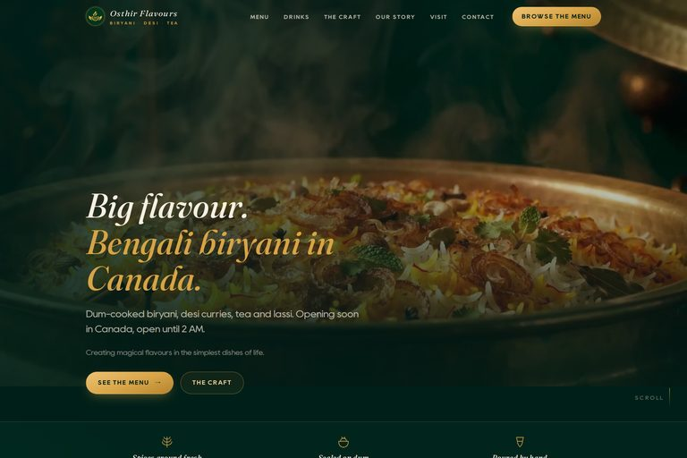

Osthir Flavours
Bengali biryani and desi restaurant website built with the Astro framework

Overview
Osthir Flavours is a Bengali restaurant serving dum-cooked biryani, slow-simmered desi curries, chicken korma, teas and lassis. Its site at osthir.ca shows the food and the method and tells people where and when to come.
What the Site Does
- A biryani story section (layered and sealed) and the eight-step, one-pot method
- Dishes made for sharing, plus teas and lassis
- Visit and contact sections with opening hours
- An opening-soon section while the kitchen gets ready
How I Built It
This one uses Astro, a static site framework: pages are built from components, layouts and data files (src/components, layouts, data, pages, styles) and compiled to plain HTML at build time, so visitors download almost no JavaScript. The repository has 13 commits, starting 2026-10-25.
- Astro components and layouts, with menu content kept in data files
- A GitHub Actions workflow: checkout, Node 20,
npm ci,npm run build, then upload and deploy to GitHub Pages - Design references (palette and background ideas) kept in the repo alongside the code
Hosting and Delivery
The built site is hosted on GitHub Pages under the client's domain, with Cloudflare in front for DNS, TLS and caching. Unlike the hand-written sites, every push triggers a full Astro build in GitHub Actions before deployment.
Domain Email
No email is configured on this domain yet.
Search and AI Discoverability
The page declares the business as a schema.org Restaurant with its address and opening hours, and the site publishes an llms.txt so AI assistants can describe the restaurant accurately.
How a Visit Works
- Someone searches for biryani or Bengali food
- They see the dishes and how they are made
- They check the hours and location, then visit
What Is Next
- A full menu page with prices
- Online ordering or reservations
- Domain email for bookings
Frequently Asked Questions
What is the Osthir Flavours website built with?
Astro, compiled to static HTML in a GitHub Actions pipeline and deployed to GitHub Pages behind Cloudflare.
Why Astro instead of plain HTML?
Components and data files keep a growing menu and repeated layout easy to maintain, while the output stays static and fast.